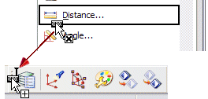
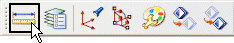

In some situations, you may not want the entire cascade menu of a menu bar entry, you just need a single option from the menu bar cascade. This can be accomplished using the Customize dialog box.
For example, perhaps it would facilitate your workflow to add the Measure Distance command from the Analysis category to your Utility toolbar.
Open the Customize dialog box. Select the Commands tab.
Select the Analysis Menu Bar Category.
Select the Measure Distance command from the Commands list, drag the menu bar command on the toolbar. 
The menu option is now displayed on your toolbar.
